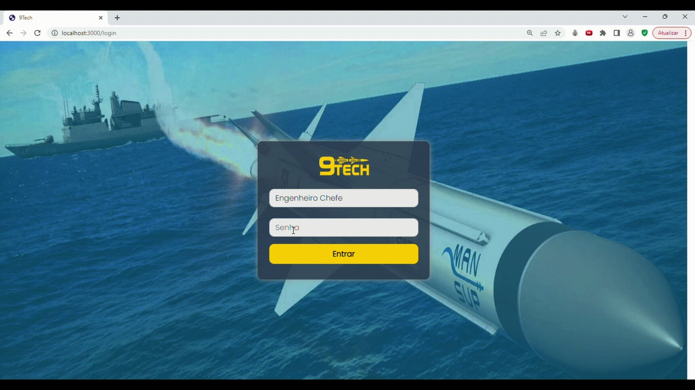

NineTech - Gerenciamento de Times e Projetos Complexos (WBS)

2023.2
Desenvolvido para o Projeto Integrador 3 da FATEC, com a SIATT como cliente. Utilizando as metodologias Scrum, atuei como Product Owner e Development Team.
Nossa parceira, a empresa Siatt, enfrenta o desafio de gerenciar eficazmente seus projetos estratégicos em um cenário de complexidade. Apresentamos uma solução abrangente e flexível: um Sistema de Gerenciamento de Times para Projetos Complexos. Este sistema foi projetado para atender às necessidades específicas da Siatt, permitindo tanto um macro gerenciamento quanto um micro gerenciamento dos projetos.
Acessar Repositório NineTechDificuldades
Contratempos que afetam a eficiência operacional, a comunicação eficaz e a capacidade de monitorar o progresso dos projetos e suas etapas em tempo real. Estes desafios incluem dificuldade de gestão apropriada e um acompanhamento adequado dos projetos, juntamente com uma interface de usuário pouco amigável e problemas relacionados à integridade dos dados.
Proposta de Solução
Um software especializado que permita importar dados de projetos em andamento a partir de arquivos Excel, facilitando a migração de dados e a transição para um novo sistema de gerenciamento. Engenheiros Chefes podem atribuir pacotes de trabalho e observar cada mudança do projeto, melhorando a organização, o acompanhamento em tempo real e a colaboração. Líderes de Projeto têm acesso apenas aos seus pacotes, podendo gerenciá-los individualmente de forma intuitiva e amigável.

Tecnologias Utilizadas
-
JavaScript:
Saiba mais
JavaScript é uma linguagem de programação de alto nível, amplamente utilizada para desenvolvimento web. Ela permite a criação de interações dinâmicas em páginas web e é suportada pelos navegadores modernos. O JavaScript foi muito importante para o desenvolvimento do front-end, principalmente por possibilitar chamar a API em Java, através de requisições assíncronas, de forma atualizar dinamicamente, por meio de interação do Usuário com o DOM, páginas em HTML e CSS. -
React:
Saiba mais
React é uma biblioteca de JavaScript para construção de interfaces de usuário (UI). Desenvolvida pelo Facebook, ela permite a criação de componentes reutilizáveis que atualizam automaticamente quando os dados mudam. React é amplamente usado no desenvolvimento de aplicações web interativas e single-page. > _Essa biblioteca desempenhou um papel vital no avanço do front-end, permitindo uma abordagem fluida, atualizando partes específicas da página sem recarregar tudo. Através dele foi possível gerenciar o estado da aplicação de maneira mais simples, proporcionando uma experiência de usuário mais responsiva. -
Java:
Saiba mais
Java é uma linguagem de programação de propósito geral conhecida por sua portabilidade, segurança e robustez. É frequentemente usada para desenvolvimento de aplicativos empresariais e sistemas distribuídos. Desempenhou um papel fundamental no desenvolvimento back-end, fornecendo uma base sólida para a construção de sistemas distribuídos e aplicações escaláveis. Auxiliou o aprendizado em Programação Orientada a Objetos. -
Spring Boot:
Saiba mais
FSpring Boot é um framework em Java que simplifica o desenvolvimento de aplicativos baseados em Spring. Ele facilita a criação de aplicativos Java robustos, oferecendo configurações padrão e uma estrutura simplificada. Reduziu a carga de trabalho dos desenvolvedores, permitindo maior concentração na lógica de negócios. -
Security e JJWT:
Saiba mais
"Security" geralmente refere-se a práticas e bibliotecas para garantir a segurança de um sistema. JJWT (JSON Web Token) é uma especificação para criar tokens de acesso baseados em JSON, frequentemente usados para autenticação e autorização em aplicativos web. Com o Spring Security e o JJWT, a proteção de APIs e a implementação de autenticação e autorização ficaram mais simples e eficazes. -
MySQL:
Saiba mais
MySQL é um sistema de gerenciamento de banco de dados relacional de código aberto. Ele é amplamente utilizado para armazenar e recuperar dados em aplicativos, oferecendo desempenho confiável e suporte para consultas complexas. Escolha comum e segura, devido à utilização anterior por parte da equipe, para armazenar dados de maneira estruturada. É uma solução eficaz para organizar grandes conjuntos de informações, sendo especialmente valioso em aplicações web. -
Docker:
Saiba mais
Docker é uma plataforma de contêinerização que permite empacotar, distribuir e executar aplicativos em contêineres. Contêineres são unidades isoladas que encapsulam todos os requisitos de software e suas dependências, garantindo consistência em diferentes ambientes._ > _Primeiro contato da equipe com contêinerização, utilizamos basicamente para o MySQL para manter consistência entre o time, durante o desenvolvimento da aplicação.
Contribuições Pessoais
Durante a primeira e segunda Sprints atuei como Scrum Master e desenvolvedor Backend, criando um Jira automatizado e implementando o Gitflow. Desenvolvi o CRUD para criação da estrutura WBS via upload de Excel e a conexão Axios API-Cliente. Nas últimas Sprints, assumi o papel de Product Owner após a saída do PO inicial, liderando reuniões com o cliente e organizando melhor a visão do produto. No Frontend, contribuí com gráficos de Curva S usando Chart.JS e participei da refatoração do backend para a nova estrutura WBS.
Hard Skills
- Javascript: Com contato mais prolongado à esta linguagem já tenho bastante autonomia, principalmente em se tratando de aplicações WEB, podendo focar mais em programação funcional e contexts.
- React e Axios: já consigo compreender bem e aplicar de forma autônoma.
- MySQL: Através do ORM do JPA, a manipulação de querys diretamente quase não foi utilizada, o que melhorou foi a Modelagem e a organização em um projeto complexo.
- Java: Primeiro contato com Java e forçando o Desenvolvimento Orientado à Objetos, princípios SOLID e algum Design Patterns. Além de segurança de aplicação via Security e JJWT. Para um primeiro contato acredito que o avanço foi significativo em Java puro, em Springboot deu para alcançar um nível bom, em SOLID também.
- Docker: Também primeiro contato, mas suficiente para ser funcional.
Soft Skills
- Proatividade: Tento sempre sem o mais proativo possível na equipe, fazendo de tudo o que for necessário: programar no front ou back ou aceitando novos desafios como Product Owner .
- Autonomia: Quando me atribui tarefas, tento fazê-las e concluí-las por conta própria, pedindo ajuda após alguns dias procurando a solução.
- Comunicação: A comunição nesse projeto foi algo difícil, talvez foi o que mais evoluiu. Tivemos dificuldade de comunição para entender o Produto, para organizar o time no Scrum e para resolver distribuição de Tasks e entendimento entre o time sobre elas. Saíram muitos integrantes durante as sprints, mas conseguimos conduzir o projeto até o final, tentando organizar o time em grupos menores para melhorar a comunicação
- Entrega e Resultados: Tivemos que enfrentar muitas horas programando para entregar os resultados, nas primeiras duas Sprints isso levou a atrasos, trabalho nos finais de semana e entrega em cima da hora. Tentamos nos organizar para entregar antes e trabalhar menos na Terceira e Quarta sprint, o que parece que foi bom e funcionou.